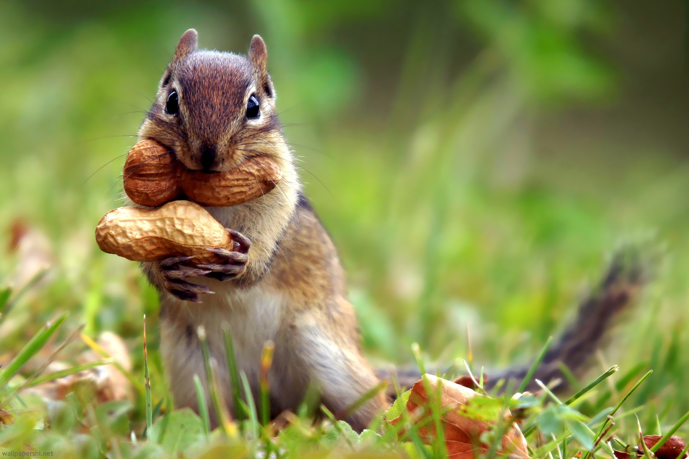
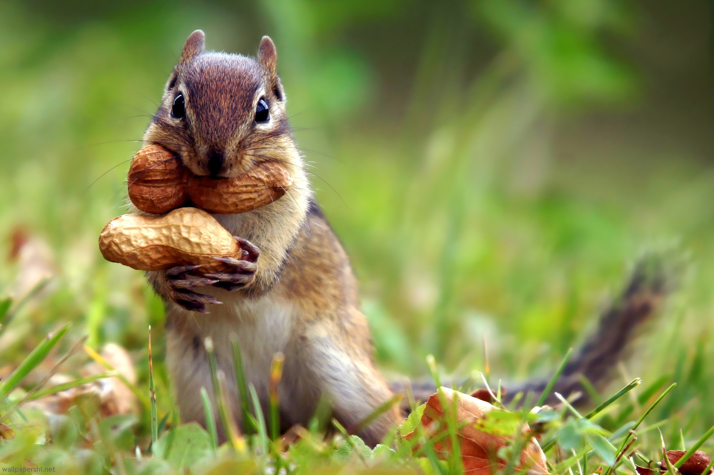

Blog about squirrel
November 24th, 2018
Squirrel
Squirrels are members of the family Sciuridae, a family that includes small or medium-size rodents. The squirrel family includes tree squirrels, ground squirrels, chipmunks, marmots (including woodchucks), flying squirrels, and prairie dogs amongst other rodents. Squirrels are indigenous to the Americas, Eurasia, and Africa, and were introduced by humans to Australia.[1] The earliest known squirrels date from the Eocene period and are most closely related to the mountain beaver and to the dormouse among other living rodent families.

Characteristics
Squirrels are generally small animals, ranging in size from the African pygmy squirrel at 7–10 cm (2.8–3.9 in) in length and just 10 g (0.35 oz) in weight, to the Laotian giant flying squirrel at 1.08 m (3 ft 7 in) in length and the Alpine marmot, which weighs from 5 to 8 kg (11 to 18 lb). Squirrels typically have slender bodies with bushy tails and large eyes. In general, their fur is soft and silky, though much thicker in some species than others. The coat color of squirrels is highly variable between—and often even within—species.[5] In most squirrel species, the hind limbs are longer than the fore limbs, while all species have either four or five toes on each paw. The paws, which include an often poorly developed thumb, have soft pads on the undersides[6] and versatile, sturdy claws for grasping and climbing.[7] Tree squirrels, unlike most mammals, can descend a tree head-first. They do so by rotating their ankles 180 degrees, enabling the hind paws to point backward and thus grip the tree bark from the opposite direction.[8] Squirrels live in almost every habitat, from tropical rainforest to semiarid desert, avoiding only the high polar regions and the driest of deserts. They are predominantly herbivorous, subsisting on seeds and nuts, but many will eat insects and even small vertebrates.[9] As their large eyes indicate, squirrels have an excellent sense of vision, which is especially important for the tree-dwelling species. Many also have a good sense of touch, with vibrissae on their limbs as well as their heads.[6]
 
